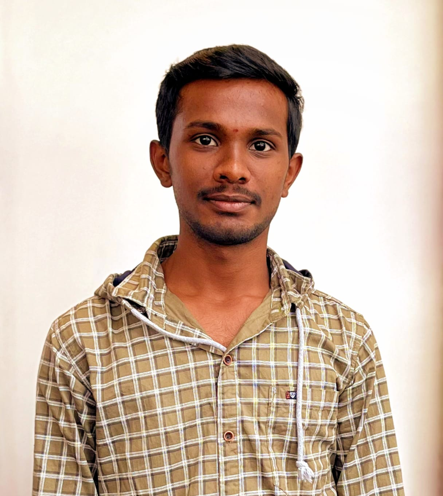

Computer Science Engineering student at M S Ramaiah University of Applied Sciences. Skilled in HTML, CSS, JavaScript, React, Python, Java, MySQL, AI/ML, DSA, MVC Architecture, OOPs, DBMS, Software Architecture.

Computer Science and Engineering graduate with hands-on experience building database-driven web applications using HTML, CSS, JavaScript, React, Python and MySQL. Experienced in developing dynamic web pages, database-driven functionality, CRUD workflows, authentication and modular application architecture. Strong foundation in OOP, SQL, REST APIs, MVC architecture, Git, problem solving and web application development, with a focused interest in frontend development and user-facing web interfaces.
Passionate about developing efficient, scalable, real-world web applications and AI data pipelines. Proven experience in full-stack web development (MVC Architecture), computer vision threat detection (YOLOv11 & OpenCV), chaotic deep learning image encryption, and data analytics (Pandas, NumPy, Excel).
🚀 Currently seeking opportunities as a Software Engineer, Python Developer, or Data Analyst where I can contribute, learn, and grow professionally.
Computer Science and Engineering
M S Ramaiah University of Applied Sciences, Bengaluru
Pre-University Education
Vision Residential PU College, Bengaluru
Secondary Schooling
Sri Venu Vidya Samasthe, Srinivaspur, Karnataka
A full-stack agricultural marketplace built with Flask and MySQL. Employs strict MVC architecture for maintainability, featuring normalized database schemas, full CRUD capabilities for inventory, and role-based access via Flask-Login.
An intelligent, real-time computer vision system using YOLOv11 and OpenCV to monitor farmlands. Features a dual-model pipeline to suppress false human alerts and utilizes the Twilio API with local alarms for instant threat notification.
An advanced hybrid security system combining deep learning (CNNs) and logistic chaotic maps to encrypt image data. Features dynamic, highly unpredictable cryptographic key generation with proven resistance to statistical attacks (Entropy ≈ 7.89, NPCR > 99%).
A scalable, high-performance Java web application built on Jakarta EE 10 and MySQL. Features strict MVC separation, atomic ACID transactions to prevent overselling, and PBKDF2 encrypted role-based access.
Interested in reviewing my detailed credentials and technical experience? Download my resume below.